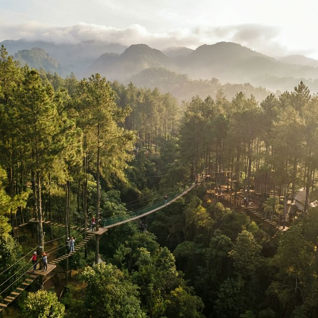
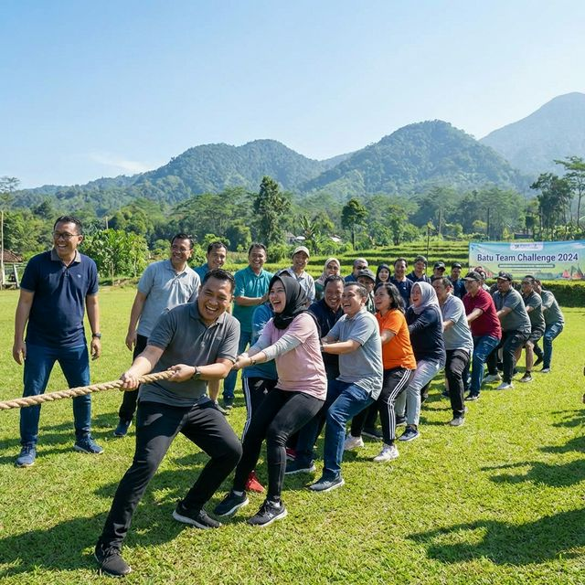

Memilih vendor outbound Batu Malang terpercaya adalah langkah krusial yang menentukan keberhasilan kegiatan outdoor perusahaan atau organisasi Anda. Kota Batu, yang terletak di dataran tinggi Malang, Jawa Timur, telah menjadi salah satu destinasi favorit untuk kegiatan outbound, team building, dan corporate gathering berkat keindahan alam pegunungannya yang luar biasa.
Namun, di tengah banyaknya pilihan vendor outbound yang tersedia, bagaimana cara Anda memastikan memilih yang tepat? Artikel ini akan membahas secara komprehensif panduan, tips, dan kriteria penting dalam memilih vendor outbound di Batu Malang yang benar-benar profesional dan terpercaya.
Mengapa Batu Malang Menjadi Destinasi Outbound Favorit?
Kota Batu, Malang, memiliki sejumlah keunggulan yang menjadikannya lokasi ideal untuk kegiatan outbound. Terletak di ketinggian 700-1.700 meter di atas permukaan laut, kawasan ini menawarkan udara segar dan suhu sejuk yang membuat peserta merasa nyaman selama kegiatan berlangsung.
Selain itu, keberagaman terrain — mulai dari perbukitan, sungai, hutan pinus, hingga lahan terbuka — memberikan fleksibilitas bagi vendor untuk merancang berbagai jenis program outbound yang menarik dan menantang. Aksesibilitas dari kota-kota besar seperti Surabaya dan Malang juga menjadi nilai tambah tersendiri, karena peserta tidak perlu menempuh perjalanan terlalu jauh untuk mendapatkan pengalaman alam yang luar biasa.

Kawasan outbound di Batu Malang dikelilingi pemandangan pegunungan hijau yang indah dan udara sejuk.
Kriteria Utama Vendor Outbound Terpercaya
Sebelum memutuskan untuk bekerja sama dengan vendor outbound tertentu, ada beberapa kriteria penting yang perlu Anda perhatikan. Kriteria ini akan membantu Anda memilah mana vendor yang benar-benar profesional dan mana yang hanya sekadar menawarkan harga murah tanpa kualitas memadai.
Legalitas dan Izin Usaha
Vendor outbound yang terpercaya harus memiliki legalitas usaha yang jelas. Pastikan mereka memiliki Surat Izin Usaha Perdagangan (SIUP), Nomor Pokok Wajib Pajak (NPWP), dan izin beroperasi dari pemerintah daerah setempat. Legalitas ini bukan hanya formalitas — ini adalah bukti bahwa vendor tersebut berkomitmen untuk menjalankan bisnis secara profesional dan bertanggung jawab.
Selain itu, cek apakah vendor tersebut terdaftar dalam asosiasi industri terkait, seperti ASOBI (Asosiasi Outbound Indonesia) atau organisasi serupa. Keanggotaan dalam asosiasi menunjukkan bahwa vendor tersebut mengikuti standar industri yang berlaku.
Pengalaman dan Portofolio
Pengalaman adalah guru terbaik, dan hal ini berlaku juga dalam industri outbound. Vendor yang telah beroperasi selama bertahun-tahun biasanya memiliki pemahaman mendalam tentang berbagai skenario yang mungkin terjadi selama kegiatan. Mereka juga lebih siap menghadapi kondisi darurat dan tantangan logistik yang muncul.
Mintalah portofolio kegiatan yang pernah mereka laksanakan. Vendor yang berpengalaman biasanya memiliki dokumentasi lengkap berupa foto, video, dan testimoni dari klien-klien sebelumnya. Perhatikan juga variasi klien yang pernah dilayani — apakah mereka sudah menangani perusahaan besar, institusi pendidikan, atau organisasi pemerintah.
"Vendor outbound yang baik bukan hanya yang menawarkan harga termurah, tetapi yang mampu memberikan pengalaman terbaik dengan standar keselamatan tertinggi." — Tim Gemilang Katun
Standar Keselamatan
Keselamatan peserta harus menjadi prioritas utama. Tanyakan secara detail tentang protokol keselamatan yang diterapkan vendor. Beberapa aspek keselamatan penting yang perlu diperhatikan meliputi:
- Peralatan keselamatan: Helm, harness, life jacket, dan peralatan lainnya harus dalam kondisi baik dan sesuai standar internasional.
- Tim medis: Adanya tim P3K atau tenaga medis yang siaga selama kegiatan berlangsung.
- Asuransi peserta: Vendor yang terpercaya biasanya menyediakan asuransi kecelakaan untuk semua peserta.
- Prosedur evakuasi: Adanya prosedur evakuasi darurat yang jelas dan telah dilatihkan kepada seluruh tim.
- Inspeksi berkala: Peralatan dan fasilitas diperiksa secara rutin untuk memastikan kelayakannya.
Tips Praktis Memilih Vendor Outbound
Lakukan Riset Online Mendalam
Di era digital seperti sekarang, langkah pertama yang paling mudah adalah melakukan riset online. Cari vendor outbound di Batu Malang melalui Google, media sosial, dan platform review. Perhatikan rating dan ulasan dari pelanggan sebelumnya. Vendor dengan rating tinggi dan ulasan positif yang konsisten biasanya lebih bisa diandalkan.
Jangan hanya melihat ulasan positif — perhatikan juga bagaimana vendor merespons ulasan negatif. Ini menunjukkan profesionalisme dan kesediaan mereka untuk memperbaiki layanan. Website yang informatif dan profesional juga merupakan indikator bahwa vendor tersebut serius dalam bisnisnya.
Kunjungi Lokasi Secara Langsung
Jika memungkinkan, lakukan kunjungan langsung ke lokasi outbound. Dengan mengunjungi lokasi, Anda bisa menilai sendiri kondisi fasilitas, peralatan, dan lingkungan sekitar. Hal-hal yang perlu diperhatikan saat kunjungan antara lain: kebersihan area, kondisi peralatan, fasilitas penunjang (toilet, area makan, tempat parkir), serta aksesibilitas lokasi.
Bandingkan Harga dengan Bijak
Harga murah tidak selalu berarti terbaik. Bandingkan penawaran dari beberapa vendor dan perhatikan apa saja yang termasuk dalam paket. Vendor yang menawarkan harga sangat rendah mungkin mengorbankan kualitas peralatan, makanan, atau bahkan keselamatan. Sebaliknya, harga yang terlalu tinggi juga tidak menjamin kualitas yang sepadan.
Yang ideal adalah mencari vendor yang menawarkan value terbaik — yaitu keseimbangan antara harga yang wajar dengan kualitas layanan yang prima. Jangan ragu untuk bertanya detail tentang apa saja yang termasuk dan tidak termasuk dalam paket harga.

Antusiasme peserta team building di lapangan outbound Batu Malang mencerminkan kualitas program yang baik.
Pertanyaan Penting yang Harus Ditanyakan
Sebelum menandatangani kontrak dengan vendor outbound, pastikan Anda telah menanyakan pertanyaan-pertanyaan kritis berikut:
- Berapa lama vendor telah beroperasi? — Minimal 3-5 tahun pengalaman lebih disarankan.
- Siapa saja klien yang pernah dilayani? — Minta daftar referensi yang bisa dihubungi.
- Bagaimana kualifikasi fasilitator? — Cek sertifikasi dan pengalaman fasilitator.
- Apa saja protokol keselamatan yang diterapkan? — Harus detail dan komprehensif.
- Apakah tersedia asuransi? — Pastikan semua peserta terlindungi.
- Bagaimana jika cuaca buruk? — Tanyakan rencana cadangan (plan B).
- Apa yang termasuk dan tidak termasuk dalam harga? — Hindari biaya tersembunyi.
- Bagaimana kebijakan pembatalan? — Ketahui syarat dan ketentuan pembatalan.
Keunggulan Gemilang Katun sebagai Vendor Outbound Terpercaya
Sebagai vendor outbound Batu Malang terpercaya yang telah berpengalaman lebih dari 10 tahun, Gemilang Katun hadir dengan sejumlah keunggulan yang membedakan kami dari vendor lainnya. Kami telah melayani lebih dari 500 perusahaan dan organisasi dari berbagai sektor industri, dengan tingkat kepuasan klien mencapai 98%.
Beberapa keunggulan utama Gemilang Katun meliputi:
- Tim fasilitator bersertifikat nasional dengan pengalaman rata-rata 5+ tahun.
- Peralatan berstandar internasional yang diperiksa dan dirawat secara berkala.
- Program custom yang dirancang sesuai kebutuhan dan tujuan spesifik klien.
- Asuransi kecelakaan untuk seluruh peserta kegiatan.
- Dokumentasi profesional berupa foto dan video kegiatan.
- Lokasi strategis di kawasan Batu dengan berbagai pilihan terrain.
- Harga transparan tanpa biaya tersembunyi.
Kesalahan Umum dalam Memilih Vendor Outbound
Ada beberapa kesalahan yang sering dilakukan oleh panitia atau penanggung jawab kegiatan dalam memilih vendor outbound. Pertama, terlalu fokus pada harga murah tanpa memperhatikan kualitas dan keselamatan. Kedua, tidak melakukan riset mendalam tentang track record vendor. Ketiga, tidak mengecek kondisi peralatan dan fasilitas secara langsung. Keempat, tidak meminta kontrak tertulis yang jelas dan detail.
Kesalahan lain yang sering terjadi adalah tidak menanyakan tentang plan B jika terjadi kondisi tak terduga seperti cuaca buruk. Vendor profesional selalu memiliki rencana cadangan untuk memastikan kegiatan tetap berjalan dengan lancar dalam kondisi apapun. Pastikan juga untuk mengecek apakah vendor memiliki akses ke fasilitas indoor sebagai alternatif jika cuaca tidak mendukung kegiatan outdoor.
Baca Juga
→ Rafting Batu Malang untuk Pemula: Tips dan Persiapan Lengkap → Paket Outbound Team Building Batu Malang Terbaik 2026 → Kegiatan Outbound Seru di Batu Malang untuk Corporate GatheringKesimpulan
Memilih vendor outbound Batu Malang terpercaya memerlukan ketelitian dan riset yang mendalam. Dengan memperhatikan kriteria-kriteria penting seperti legalitas, pengalaman, standar keselamatan, kualifikasi fasilitator, dan transparansi harga, Anda bisa menemukan vendor yang tepat untuk kegiatan Anda.
Jangan tergoda oleh harga murah yang mengorbankan kualitas. Investasikan waktu untuk melakukan riset, kunjungi lokasi secara langsung jika memungkinkan, dan jangan ragu untuk bertanya secara detail sebelum mengambil keputusan. Dengan vendor yang tepat, kegiatan outbound Anda akan menjadi pengalaman yang aman, menyenangkan, dan bermakna bagi semua peserta.
Gemilang Katun siap menjadi mitra terpercaya Anda dalam menyelenggarakan kegiatan outbound di Batu Malang. Hubungi kami sekarang untuk konsultasi gratis dan dapatkan penawaran terbaik untuk kegiatan Anda!
Pertanyaan yang Sering Diajukan (FAQ)
Biaya rata-rata vendor outbound di Batu Malang berkisar antara Rp 150.000 hingga Rp 500.000 per orang, tergantung pada jenis paket, durasi kegiatan, jumlah peserta, dan fasilitas yang disertakan. Paket premium dengan fasilitas lengkap termasuk makan, transportasi, dan dokumentasi bisa mencapai Rp 750.000 per orang.
Hal-hal penting yang perlu diperhatikan meliputi: legalitas dan izin usaha, pengalaman dan portofolio, standar keselamatan, kualifikasi fasilitator, testimoni klien sebelumnya, serta transparansi harga. Pastikan juga vendor memiliki asuransi untuk peserta dan rencana cadangan untuk kondisi darurat.
Ya, Gemilang Katun menyediakan paket outbound custom yang disesuaikan dengan kebutuhan, jumlah peserta, budget, dan tujuan kegiatan Anda. Tim kami akan berkonsultasi dengan Anda untuk merancang program yang paling sesuai.
Minimal peserta outbound biasanya 20-30 orang untuk mendapatkan harga optimal. Namun, Gemilang Katun bisa melayani group kecil mulai dari 15 orang dengan paket khusus yang tetap berkualitas.